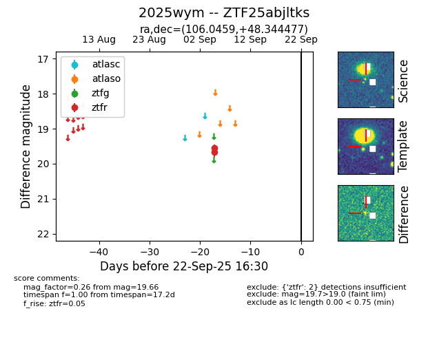

FINK: ZTF25abjltks
Lasair: ZTF25abjltks
ALeRCE: ZTF25abjltks
TNS: 2025wym
YSE: 2025wym
ZTF25abjltks (ztf,fink)
2025wym (tns,yse)
equatorial (ra, dec) = (106.0459,+48.34448)
galactic (l, b) = (168.6094,+21.93601)

last ztfr=19.66
2 ztfr detections